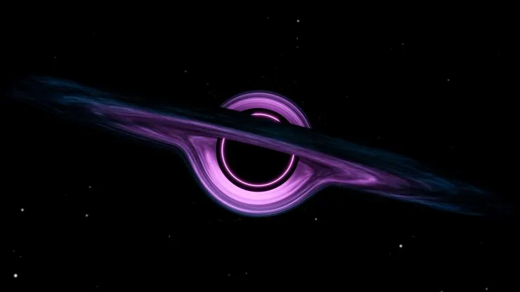

A Verdade Sobre os Buracos Negros
Durante muito tempo, os buracos negros foram tratados como monstros invisíveis vagando pelo universo. Mas a ciência revelou que eles são, na verdade, regiões do espaço onde a gravidade se tornou tão intensa que nada consegue escapar, nem mesmo a luz. Eles nascem quando estrelas gigantes colapsam sob o próprio peso, comprimindo matéria de forma extrema. O resultado é um ponto de densidade absurda envolto por uma fronteira chamada “horizonte de eventos”, o limite definitivo entre retorno e desaparecimento.
O que acontece se você cair em um?
A resposta não é simples, mas é fascinante. Se alguém se aproximasse demais de um buraco negro, começaria a sentir um fenômeno chamado espaguetificação. A gravidade puxaria os pés com muito mais força do que a cabeça, alongando o corpo de maneira extrema. Além disso, para um observador distante, pareceria que você estaria se movendo cada vez mais devagar, quase congelando no tempo. Isso acontece porque o tempo passa de forma diferente em regiões de gravidade intensa. Depois de cruzar o horizonte de eventos, não há retorno conhecido. O destino final ainda é um mistério que desafia as leis da física como as entendemos hoje.
Observação Cosmica
Assista a uma simulação impressionante que mostra como seria a aproximação de uma nave ao redor de um buraco negro. A representação ajuda a entender como a luz se curva e como o espaço ao redor se distorce dramaticamente.